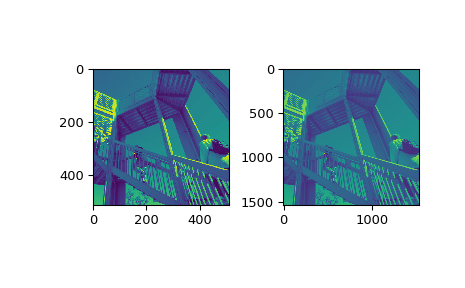

scipy.ndimage.zoom¶
-
scipy.ndimage.zoom(input, zoom, output=None, order=3, mode='constant', cval=0.0, prefilter=True)[source]¶ Zoom an array.
The array is zoomed using spline interpolation of the requested order.
- Parameters
- inputarray_like
The input array.
- zoomfloat or sequence
The zoom factor along the axes. If a float,
zoomis the same for each axis. If a sequence,zoomshould contain one value for each axis.- outputarray or dtype, optional
The array in which to place the output, or the dtype of the returned array. By default an array of the same dtype as input will be created.
- orderint, optional
The order of the spline interpolation, default is 3. The order has to be in the range 0-5.
- mode{‘reflect’, ‘constant’, ‘nearest’, ‘mirror’, ‘wrap’}, optional
The mode parameter determines how the input array is extended beyond its boundaries. Default is ‘constant’. Behavior for each valid value is as follows:
- ‘reflect’ (d c b a | a b c d | d c b a)
The input is extended by reflecting about the edge of the last pixel.
- ‘constant’ (k k k k | a b c d | k k k k)
The input is extended by filling all values beyond the edge with the same constant value, defined by the cval parameter.
- ‘nearest’ (a a a a | a b c d | d d d d)
The input is extended by replicating the last pixel.
- ‘mirror’ (d c b | a b c d | c b a)
The input is extended by reflecting about the center of the last pixel.
- ‘wrap’ (a b c d | a b c d | a b c d)
The input is extended by wrapping around to the opposite edge.
- cvalscalar, optional
Value to fill past edges of input if mode is ‘constant’. Default is 0.0.
- prefilterbool, optional
Determines if the input array is prefiltered with
spline_filterbefore interpolation. The default is True, which will create a temporary float64 array of filtered values if order > 1. If setting this to False, the output will be slightly blurred if order > 1, unless the input is prefiltered, i.e. it is the result of callingspline_filteron the original input.
- Returns
- zoomndarray
The zoomed input.
Examples
>>> from scipy import ndimage, misc >>> import matplotlib.pyplot as plt
>>> fig = plt.figure() >>> ax1 = fig.add_subplot(121) # left side >>> ax2 = fig.add_subplot(122) # right side >>> ascent = misc.ascent() >>> result = ndimage.zoom(ascent, 3.0) >>> ax1.imshow(ascent) >>> ax2.imshow(result) >>> plt.show()
>>> print(ascent.shape) (512, 512)
>>> print(result.shape) (1536, 1536)